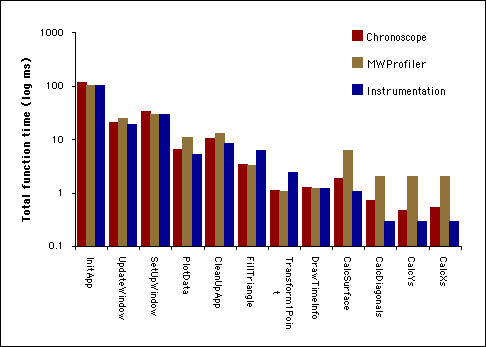

Don't believe everything you read in the profile!
- Every profiler affects the behavior of the application being profiled
- Data collection overhead
- No more leaf functions
- Changes in disk I/O patterns
- Different profilers skew in different ways
- Beware of bias towards small functions
- Understand how your profiler works
Profiling comparison
Data collected on a small test application.
